Git & GitHub¶
Git & GitHub
Git 是一個分散式版本控制的軟體工具。
GitHub 是一個以 Git 作為版控工具的線上原始碼代管服務平台，用於公開程式或軟體代碼。
檢查 Git 安裝：git --version
1. 準備工作¶
1-1. 概念¶
若你還不太理解 Git 及 GitHub ，推薦以下兩部影片。
-
Git 介紹影片
这可能是你看过最通俗易懂的git介绍了 | 什么是git？它如何实现代码版本控制的？它是怎么工作的？还不懂git？赶紧看一看吧【设计师的100个前端问题-05】
-
GitHub 介紹影片
一次听明白Github什么是 | git如何与github协作 | github上如何参与开源项目 【设计师的100个前端问题-06】
1-2. GitHub SSH Key¶
GitHub SSH 驗證機制
使用 GitHub 前，你須要丟 public key 到 GitHub 上，驗證本地電腦與遠端 GitHub Server 的連線。
在驗證成功後，你才能在自己的 GitHub 中對 Repository 進行增減、修改或更新。
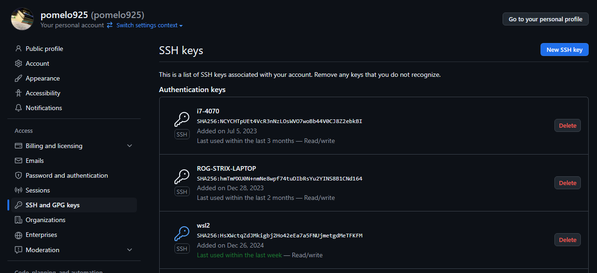
我的 GitHub 上存取多個不同裝置的 public key。
因此能在不同的電腦上更新我的 repository。
設定步驟如下：
- 登入 GitHub
- 點擊右上角圖示下拉選單 settings
- 選擇左側欄位 SSH and GPG keys
- 按藍色的 New SSH Keys。
設定畫面解釋
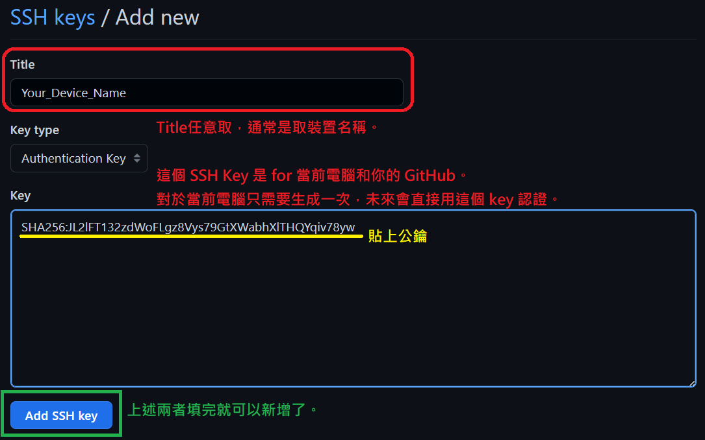
Checkpoint
使用指令 ssh -T git@github.com 測試連線，成功後才能繼續往下做。
1-3. Git → GitHub¶
在實際操作前，先來釐清 Git 流程和機制吧！
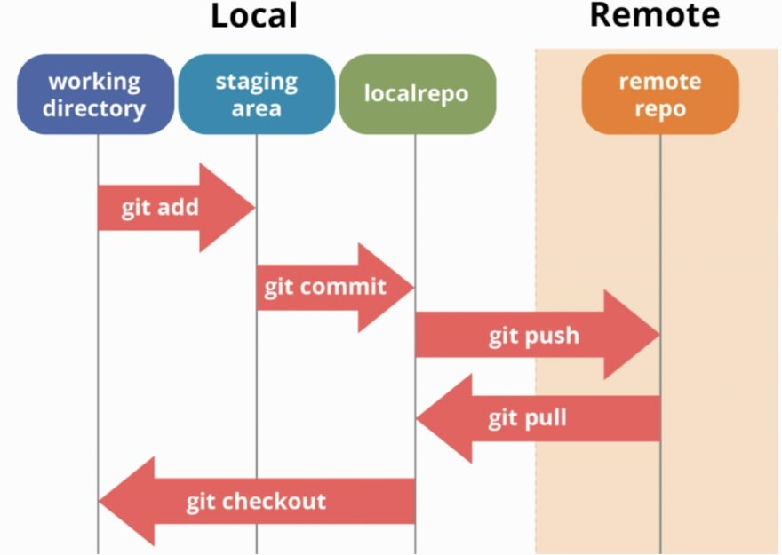
本地端 vs. 遠端
- Local（本地端）
- working directory（工作目錄）：實際編輯的檔案位置。
- staging area（暫存區）：用來暫存準備提交的變更。
- local repo（本地版本庫）：記錄正式提交的歷史。
- Remote（遠端）
- remote repo（遠端版本庫）：例如 GitHub、GitLab 上的倉庫。
主要指令與流程
| 指令 | 來源 → 目標 | 主要用途與說明 |
|---|---|---|
git add |
working directory → staging area |
標記要提交的檔案。 可篩除不必要的檔案（如編譯檔、權重檔等）。 |
git commit |
staging area → local repo |
將變更存入本地版本歷史。 需撰寫 commit 訊息紀錄本次修改重點。 |
git pull |
remote repo → local repo |
拉取遠端更新。 同步他人修改或讓本地裝置更新至最新版本。 |
git push |
local repo → remote repo |
將本地提交推送到 Github。 與遠端同步，讓團隊成員取得你的修改。 |
git checkout |
local repo → working directory |
切換分支或還原到某個版本，讓工作目錄回到指定狀態。 （暫時不用深入理解） |
2. 工作流（Workflow）¶
Tip
這裡都會直接使用 VSCode 操作 Git（而不是在 Git Bash 中打指令）。
VSCode 擴展模組以按鍵代替 git 指令，操作更快速方便、學習也更快。
我會提供對應 Git 指令，你也可以選擇在 Git Bash 中輸入，效果相同。
因為很多進階用法仍要靠指令完成，所以也別排斥使用指令。
Warning
實驗室禁止使用 USB 拷貝等「沒有使用 Git 版控工具」的方式移植程式碼，會變得髒亂很難管理！
最後還要花人力特別去整理 code & environment，會很悲劇。
Checkpoint
在 VSCode 中的 extensions 下載 Git 模組。
2-1. git Init¶
對應指令：
git init
首先，點擊 VSCode 左上角「開啟資料夾」，瀏覽至任意空資料夾，或一還沒使用 git 初始化過的專案的根目錄。
注意你選擇的資料夾初始化後，該層級以及所有子層級的檔案都會被納入 git 版控中。
在 vscode 中的 source control ，進行初始化。
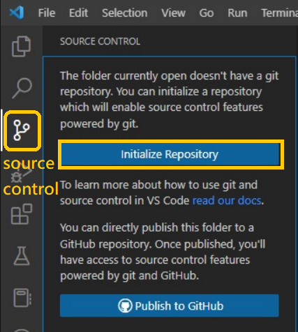
沒有 Source Control Icon
請檢查是否有安裝 Git， 以及相關的 VSCode Extensions。
Checkpoint
初始化後，使用 ls -la 指令檢查目錄中有包含隱藏檔案 .git。
2-2. git add¶
對應指令：
git add
新增資料到暫存區 ( Storage Area )。
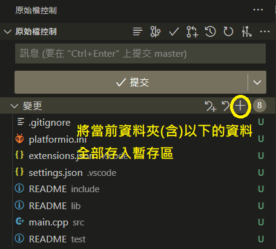 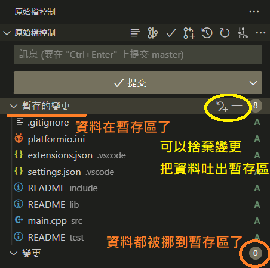
2-3. git commit¶
對應指令：
git commit -m "your commit msg"
打包一個版本做提交，並寫上 commit 訊息。
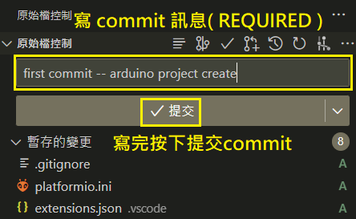
Error: Make sure you configure …
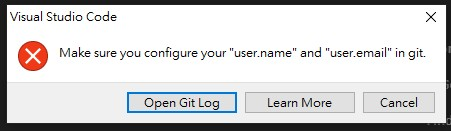
Solution
用快捷鍵 ctrl + ~ 打開終端機，在右上方「+」的下拉選單中選 Git Bash。
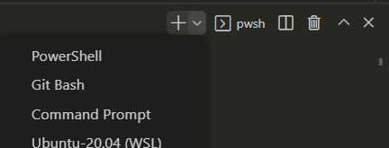
在 Git Bash 中設定 GitHub 的 username 和 email。
Checkpoint
- 成功打包訊息。
- 請至 conventions-commit 了解 git commit 的格式規範和習慣。
2-4. publish branch¶
對應指令：
git push --set-upstream origin main
git push：將本地分支的提交推送到遠端版本庫。origin：遠端儲存庫的預設名稱。main：你要推送的分支名稱（本地的main分支）。--set-upstream（或-u簡寫）：設定預設追蹤分支，意思是把你的本地分支main與遠端的origin/main關聯起來。
按下「publish branch」建立並發佈分支。
首次需認證確認
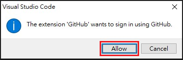 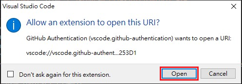 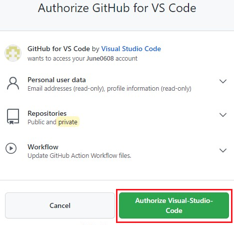
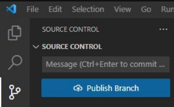
2-5. create repository¶
對應指令：
git remote add origin [username]/[repo].git
git push -u origin main
選「private repository」，並輸入 repo name。 (自訂)

Checkpoint
發佈 repo 並且能在 GitHub 中找到。
2-6. git pull¶
對應指令：
git pull -u origin master
-
在 GitHub repo 頁面中新增 README。
README.md通常以 markdown 撰寫，說明有關於此 REPO 的資訊。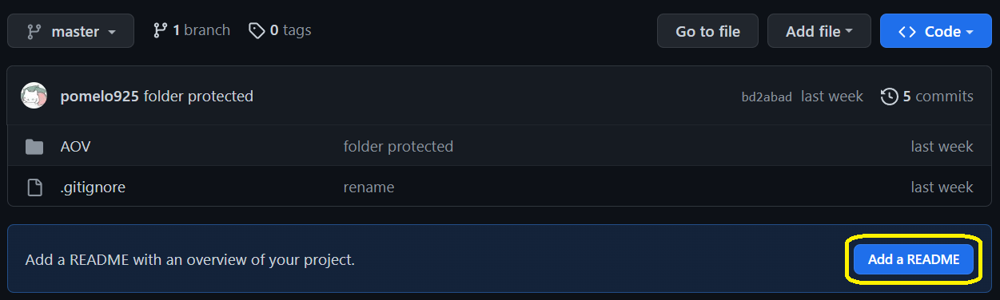
目前情況
注意 commit 完後，現在遠端的 GitHub Repo 是新版本。
所以現在須要進行git pull，更新本地端使其與遠端同步。 -
本地端提取新版本。
到「source control」的右側「…」， 選擇「提取」。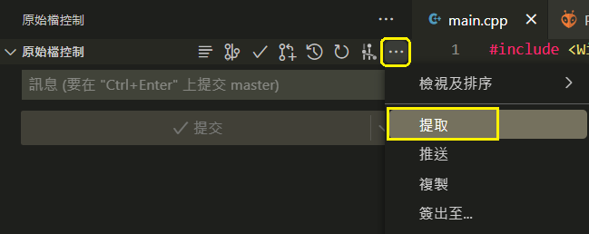
在多人合作時，隊友會不定期使用 git push 更新專案項目。
而我們也要定時 git pull 更新專案，確保彼此是基於同個版本之上開發。
但通常不會直接在同個 branch 上開發，這裡先有個概念即可。
Checkpoint
確認在 local repo 中出現 README.md.
2-7. git push¶
對應指令：
git push origin main
-
更改本地端資料：新增檔案 hello.txt，並隨便打幾個字。
-
git add並git commit。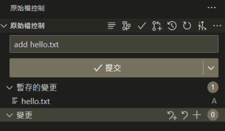
-
git push：按下「同步變更」就能夠成功 push 上去囉！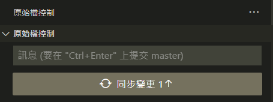
Sync（同步變更）
今天在雲端新增 readme 後，假設我們沒有 git pull 下來；
同時間我又在本地端新增了 hello.txt 檔案，這樣會出現本地和遠端版本不一致。
同步變更其實就是先 git pull 再 git push。
事實上，Github 規定在 push 之前必須更新到和雲端版本相同。
必要時是可以透過 -f 來強制推送（並覆蓋檔案），但不推薦用除非你知道在做啥。
總結
至此，我們已經跑過一遍完整的開發流程。
從本地建立 Local Repo，上傳到 Github，並且模擬開發中的 pull 和 push 過程。
個人更新，要維持習慣天天更新 Repo，紀錄工作進度同時也做了備份。
團隊更新，會須要更多 Git 知識，請繼續跟著章節學習！
Checkpoint
檢查 GitHub Repo 上是否有出現新增檔案，並且自己再試幾遍去熟悉流程。
2-8. git clone¶
對應指令：
git clone [repo_url]
透過 git clone 指令，能速載任意的 Public Repo 或自己的 Repo。
-
首先複製自己 repo 的網址。
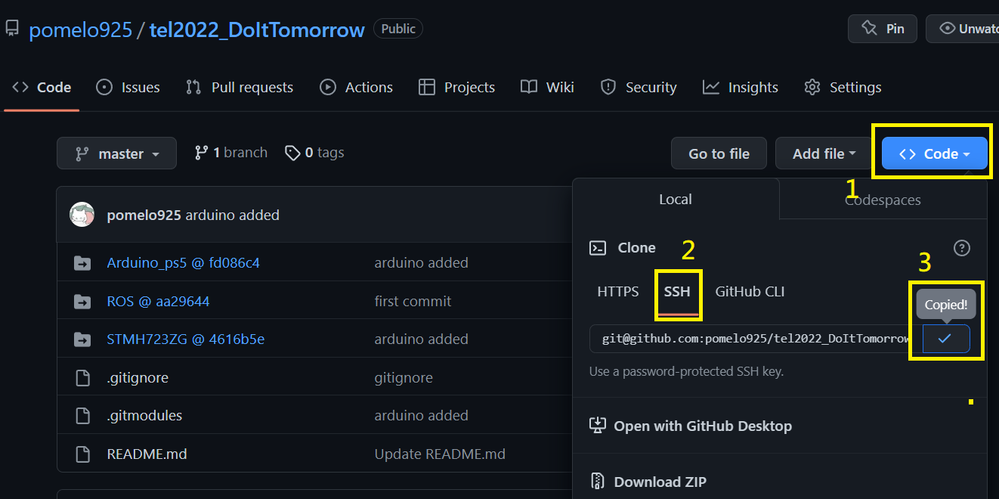
SSH vs. HTTPS
有存取權限的 Repo 請使用 SSH 網址，比較安全。（盡量都用 SSH）
沒有的話就用 https 做 git clone。 -
開 Terminal 並 Git Clone。
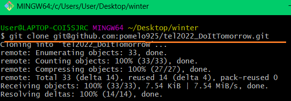
Checkpoint
學會使用 git clone。
3. Git Flow & GitHub Flow¶
Git Flow 是使用 Git 進行團隊開發時的流程規範與策略。
幫助多人協作、降低衝突、維護乾淨的專案歷史。
這只是一種思想和概念，不是一套嚴謹的實際規範或流程。
多看 GitHub 開源專案，能學習到大團隊是如何管理的。
3-1. git branch¶
在開始 Git Flow 與 GitHub Flow 前，需要先熟悉 git branch 功能。
Branch（分支），能讓你在不影響主線 (main) 的情況下進行實驗、開發新功能。
預設分支通常為 main 或 master。
這裡想先說明幾點：
- 同個 repo 的
branch之間的版本往往是不一致的。
例如團隊開發中，以人名為命名的branch上，有各自組員的新進度。
又或是緊急修復或實驗測試時，臨時新開的hotfix分支。
通常這些分支相對於main的版本會是更新的。 branch一樣有分 local 和 remote。
在本地新增 branch 後，須git push才會在 GitHub 上看到分支。
同理若於 GitHub 上新增分支，須git pull才能在本地端看到新分支。git push一次只能發佈一個branch的更新。- 團隊開發中，理應定期開會並合併代碼，對不同的
branch做git merge。
git merge階段，要確認彼此的程式碼沒有衝突。 git clone會將所有分支的資料都 clone 下來，但只顯示預設分支。
因為同一時間只能在一個分支上作業，切換分支需要手動做git checkout。
Git Branch 指令集
-
查看分支
-
新增分支
-
切換分支
-
刪除分支
-
合併分支
-
推送分支到遠端
-
取得遠端分支
Checkpoint
在 local repo 中新增不同 branch，熟悉在不同的分支上開發，並 push 到 Github。
並且善用 VSCode extensions，如透過 GUI 換 branch、看 Git log。
範例：過去團隊比賽的紀錄，以人名為命名的 branch 各自開發並定期 merge。
透過 Git Extensions 可以清楚觀看開發紀錄。

3-2. git flow¶
Git Flow 是歷史悠久且廣泛被使用的一種版控流程。
顧名思義，GIt flow 僅需 Git 工具就能實現。與之對應的有 GitHub Flow。
大概知道 git flow 形式即可，現在大多都走 github flow。
專案中會有兩個長期存在的分支，分別為主分支 Master 以及開發分支 Develop。
Master：用於存放對外發布的版本。此分支上發佈的版本都應該是穩定的。Develop：用於存放最新的開發版本。
再來還有三種短期（臨時性）分支。
開發完就被 merge 進 develop 或 master 並刪除。
- 功能分支（feature branch）
- 修復分支（hotfix branch）
- 預發分支（release branch）
3-3. GitHub Flow (fork & PR)¶
GitHub Flow 能在部署上自動化，如一天之類需要多次部署的開發（持續發布）。
GitHub 比 git 多兩個服務，fork及pull request（簡稱PR），還有 issue tracking 等。
首先是 fork，類似於 clone，會將他人的 repo 複製一份到自己的 GitHub 上。
並且將你複製的與原 repo 建立連結。
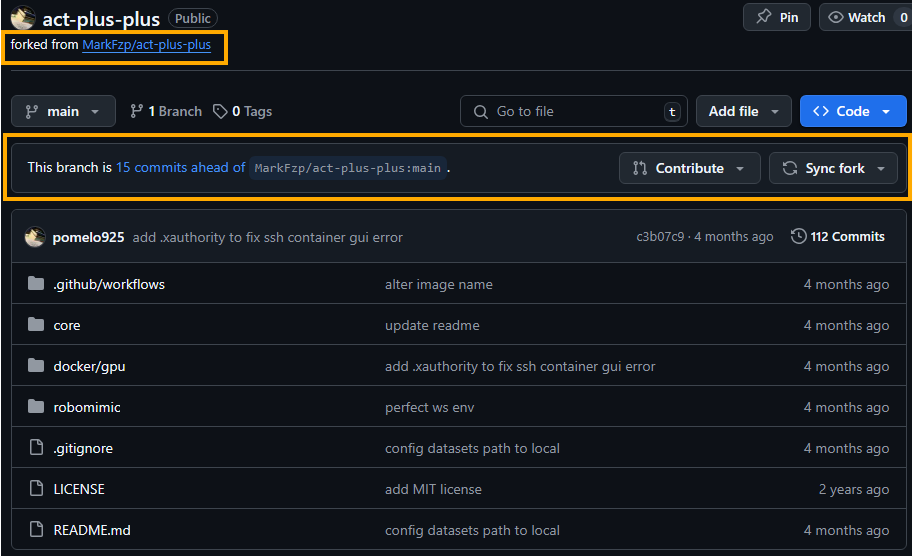
你可以在你複製的那份任意修改，完全不會影響到原作。
假如今天你對複製在你個人 GitHub 上的那份 repo 做了功能修復，並想貢獻給原作者。
這時就可以透過 GitHub 上面的 GUI 去丟 PR，毋須指令操作。
原作者會收到通知，由他確認是否同意你的 PR。
Pull Request (PR)
Pull Request，意思是 request 對方 git pull 你的 git commit。
本質上就是在請求 git merge ，只是多了一種貢獻關係。
除了 fork repo 可以對原作丟 PR 之外。
即便是在同一個 repo 中，不同的 branch 之間也能在 GitHub 上做 PR 的。
例如 hot-fix 分支請求 release 分支合併它新增的緊急修復補包。
現在考慮一個場景吧！
我們現在共同維護著實驗室網站 labpage_repo。
正式發佈的版本為 release 分支，網管為 alan，並加入新成員 pomelo925。
若 pomelo925 想要在 labpage_repo上新增其個人檔案，可以怎麼做？
這裡提供兩種比較正規的做法，Fork 版本與 Branch 版本。
-
Fork 版本（適用於當
pomelo925沒有labpage_repo的存取權限）pomelo925將labpage_repofork到個人 GitHub 上，名稱為fork_labpage_repo。pomelo925在fork_labpage_repo上新增了 925 行程式碼並測試無誤。pomelo925在 GitHub 上對labpage_repo丟 PR，請求代碼合併。alan收到通知，測試沒問題後同意PR，將修改合併到分支release中。
-
Branch 版本 （適用於當
pomelo925擁有labpage_repo的部分存取權限）pomelo925git clonelabpage_repo到本地端。pomelo925在本地端建立並git push分支pomelo_dev。pomelo925在丟了 925 次的 commit 後，覺得很完美了。- 因為分支
release被設定成只有網管alan擁有修改權限。 於是pomelo925決定在 GitHub 上對分支release丟PR。 alan收到通知，測試沒問題後同意PR，並將修改合併到分支release中。- 此時分支
release和pomelo_dev版本一致，可以刪除分支pomelo_dev。
Checkpoint
- 在自己的 repo 中，對
main branch丟PR，並自己同意請求。
( 除了熟悉操作、介面外，也可以多多測試，合併檔案衝突時要怎麼處理) - 類似的流程，但改成 fork 自己的專案，並向自己丟
PR。
4. 子模組（Submodule）¶
Git Submodule 是 Git 的一個功能。
用來在一個 Git 倉庫（主專案）中引用另一個 Git 倉庫（子專案）， 讓你能夠把外部專案（例如：library、工具、模組）直接嵌入到你的專案中， 但又能保持它們的版本獨立管理。
如下圖範例，點擊 submodule 後會跳轉至對應的 GitHub Repo。
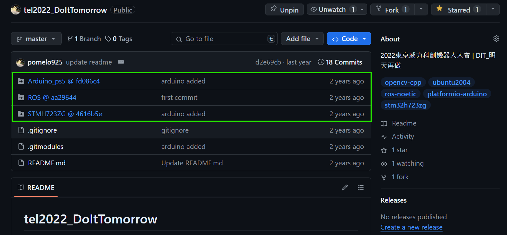
HRC Lab 中 Submodule 的使用方式
在實驗室中，submodule 通常是功能性的，會對應到特定的 robot, sensor 或 algorithm 等。（e.g hrc-pme/realsense-ros）
剩下的 repo 則是 porject-based，會包很多的 launch files 去 call submodule 的 function。
像是 hrc-pme/koch_robot_unity (Unity/Operator 端) 或 hrc-pme/drl-ls-navi）(ROS/Robot 端)。
關於更多 project-based repository 的細節，請參考 conventions-repo。
4-1. 建立父子模組關係¶
前情提要： 在 GitHub 上有兩個 repository,
parent_repo&child_repo。
可以新建兩個, 或直接用現成的。
現在要將 parent_repo 以 submodule 的方式連結 child_repo。
-
Navigate 到
parent_repo的根目錄。 -
建立子模組關係。（此指令包含
git clone的作用） -
確認在
parent_repo根目錄的 source control 中，會新增兩個檔案。範例
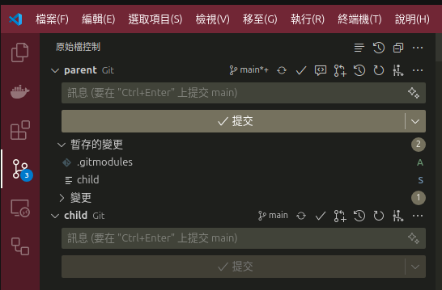
.gitmodules：自動生成的定義 submodule 關係的文件。child_repo：指定的子模組資料夾。它在 Git 的追蹤中是作為一個特殊的 commit pointer。
在parent_repo的 Git Commit 中，子模組是以一特定的 commit SHA 記錄的，而不是整個目錄內容。
-
將這些變更打包並
git push到 GitHub 上。
Checkpoint
成功建立 submodules，並呈現於 GitHub 中。
4-2. Submodule Pointer¶
以下是 parent_repo 和點擊 child_repo 後的 submodule 截圖。
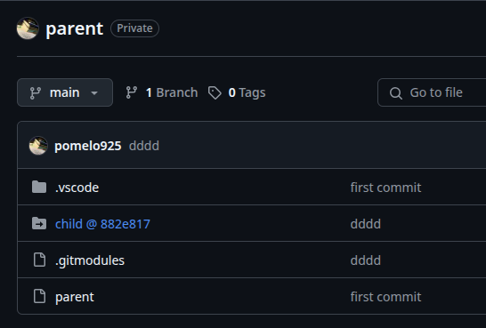 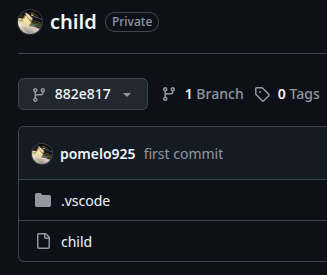
從截圖中我們可以知道：
parent位於mainbranch 上。- submodule 紀錄的是 commit 版本，在
@後方的就是版本的流水碼。 - 導向的
childsubmodule，並不是位於 branch 上， 而是特定的 commit882e817。 -
可以透過下拉選單，切換成
mainbranch，查看child最新的版本。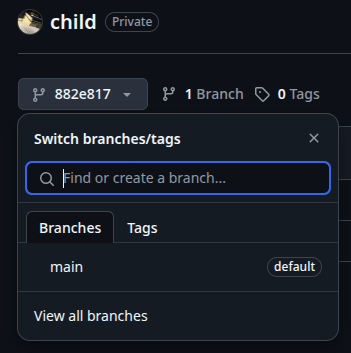
即便 submodule 在 main branch 持續更新，若 parent 沒有更新 commit pointer。
那麼 parent 上的 submodule 依舊會是過去的某個版本。
4-3. 更新子模組¶
當
child更新時，我們需要更新parent中導向child的 commit pointer 。
假設 child 已經做了更新：
-
移至
parent的根目錄，輸入git status確認 commit pointer 為modified。 -
跑一遍 add→ commit→ push 即可。
Checkpoint
成功更新子模組，並使用 VSCode 的 GUI 來加速操作。
並養成習慣在任何的 git push 之後，都會去 GitHub 上檢查運作是否如預期。
4-4. 新增子模組¶
日後要新增子模組的步驟：
cd <root_folder>
git submodule add <submodule_url> <path>
git submodule update --init --recursive
git commit -am "add: repoB submodule"
git push
5. GitHub Action¶
Abstract
GitHub Actions 是 GitHub 提供使用者自訂 Repo 內的 CI/CD (自動化流程)。
5-1. Docker Image 自動流程¶
Abstract
最常用的服務之一，是建立「Docker Image 自動構建並發佈到 Docker Hub」的自動化流程。
這部份可以等學完 Docker 再回來學！
設定步驟：
-
在 repo 的根目錄中新增
.github/workflows。
這是專門用來放置 GitHub Actions 的工作流程設定檔（Workflow files）。
GitHub 官方會在 repo 裡自動尋找.github資料夾中的內容，因此檔名不能亂改。 -
在
.github/workflows中自定義 workflows 的 yml。( e.gdocker-image.yml)action yml 範例
比較須要更改的部分有用
##標註。name: VIPERX 300S image (x86) ## on：設定會觸發自動化工作流程的事件 ## 這裡希望只有當 docker 相關檔案被 git push 時, 才會觸發 CI/CD on: push: branches: [ main, pomelo925 ] paths: - ros2/docker/Dockerfile - .github/workflows/docker.yml ## jobs：定義工作內容 jobs: docker: runs-on: ubuntu-latest steps: # Initialization - name: Repo Checkout uses: actions/checkout@v4 - name: Docker meta id: meta uses: docker/metadata-action@v5 ## 指定 docker image 的 name:tag with: images: ${{ secrets.DOCKERHUB_USERNAME }}/viperx-300s tags: default # Login Docker Hub - name: Docker Hub Log-in uses: docker/login-action@v3 with: username: ${{ secrets.DOCKERHUB_USERNAME }} password: ${{ secrets.DOCKERHUB_ACCESS_TOKEN }} # Build Docker image - name: Build Docker image uses: docker/build-push-action@v6 with: context: ros2/docker ## 指定 docker 資料夾路徑 load: true tags: ${{ steps.meta.outputs.tags }} push: false no-cache: true # Push Docker image to registry - name: Push Docker image uses: docker/build-push-action@v6 with: context: ros2/docker ## 指定 docker 資料夾路徑 push: true tags: ${{ steps.meta.outputs.tags }} no-cache: true -
在 GitHub 上設定僅限此 repo 讀取的 secrets 金鑰。
儲存 Dockerhub 的 username 及 token。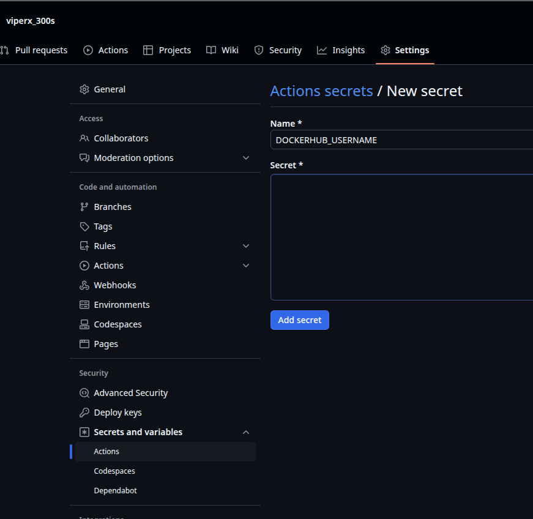
-
git push後到 GitHub 上檢查是否開始運行 GitHub Action。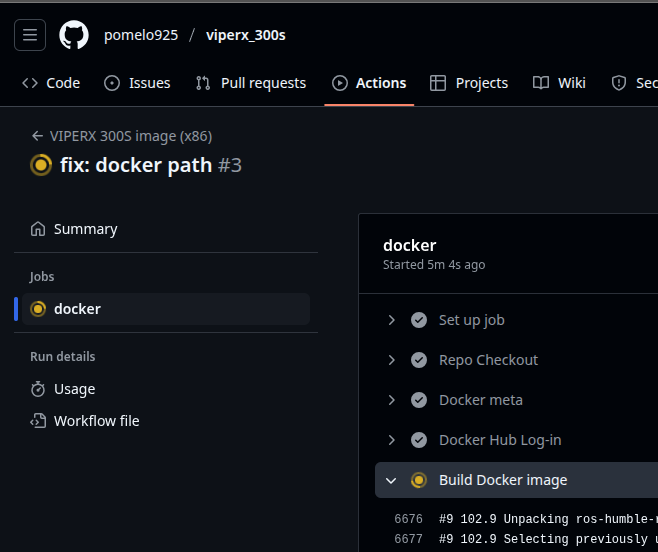
-
在 VSCode 載入 GitHub Actions 套件，也能看到遠端的進度。
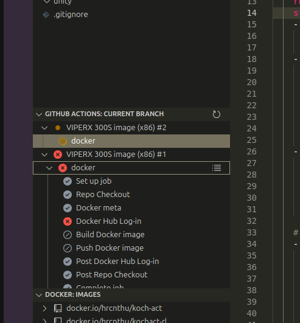